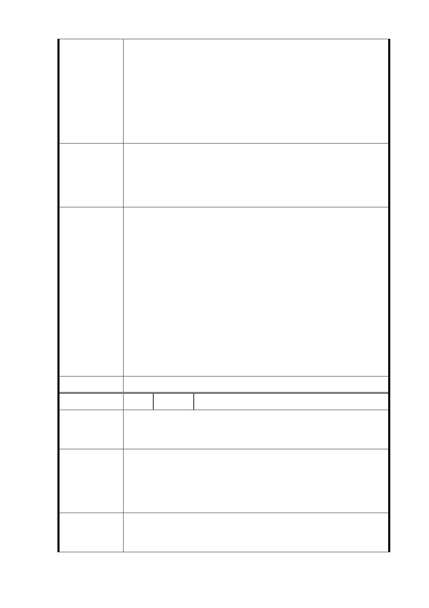

巷道，雖前揭計畫有意調為雙向3車道，但考量日後激
增的車輛，前揭路口設置汽機車停車場出入口將造成
待停車之車輛由福德街往北深入基地，福德街84巷及
北側忠孝東路五段524巷勢必無法負荷如此龐大的車
流，道路將過分擁擠，降低原本道路服務水準，加上
由福德街84巷經忠孝東路五段524巷至忠孝東路五段
的北向路線並無騎樓，屆時人車爭道，恐將造成用路
人的危險。
一、 停設該汽機車出入口，或改設其他地方，以免待停車
輛由福德街往北深入基地，造成不必要擁塞及危險。
建議辦法
二、 降低開發強度，減少建築物量體及因應而生的停車
位，進而裁減該停車場出入口。
一、 依本府交通局初步評估結果，本案開發後尖峰時段約
衍生 11,744 人旅次/小時(1,422 車/小時)，主要衝擊
大道路及福德街 84 巷，爰需輔以相關配套措施予以改
善，包括：道路路型調整、規劃友善人行、自行車及
大眾運輸轉乘空間、停車場福德街 84 巷、大道路兩側
市府回覆
意見
進出及停車空間內部化等。
二、 經本府交通局評估結果，前揭配套措施施行後，周邊
道路服務水準仍可維持 D 級以上。
三、 有關開發強度部分，本府將尊重本市都市計畫委員會
決議。
四、 另依本案都市設計準則規定，基地四周將建構完善之
人行步道系統，提供優質步行環境，以達人、車分流
之目標。
委 員 會 決 議 同編號 1
編 號 9 陳情人 張○宗
林口街80巷是人口密集的住宅區，未來福德平宅若改建為臨
陳 情 理 由 時停車場及放置街道家具，就會變成請神容易送神難的吵雜
生活環境。
一、 住宅區就是希望有寧靜的生活品質，不需要華而不實
的添加物，要引來流浪漢嗎?
建議辦法
二、 臨時停車場請往大道路 96 巷沒有住戶居住的位置設
立。
市府回覆
意見
一、 配合本府公共住宅興建策略，於考量地區發展條件及
公共設施容受力前提下，將原計畫商業區部分容積挪
作公共住宅使用，適度提高公共住宅戶數，並透過設
- 15 -